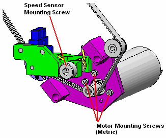
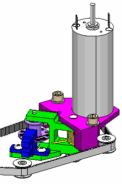

Replacing Mixer Motor
This procedure describes how to replace the mixer motor in Access or Access 2 instruments.
Note: Most mixer motor errors are caused by broken wires at the solder joints inside the shrink tube at the top of the motor. Mixer motor errors are also observed when a mixer bearing has seized or when the bushing on the speed sensor is binding so that the motor cannot turn.


-
Remove the mixer motor.
-
Install the motor.
- Install the three metric screws holding the motor to the mounting bracket.
- Install the mixer belt onto the motor drive gear, the speed index sensor wheel, and the mixer pulleys.
- Install the two screws holding the mixer motor bracket to the analytical module.
- Connect the mixer motor power connector.
-
Verify that the mixer is operating properly.
- If you have any questions or concerns, contact your local support organization.